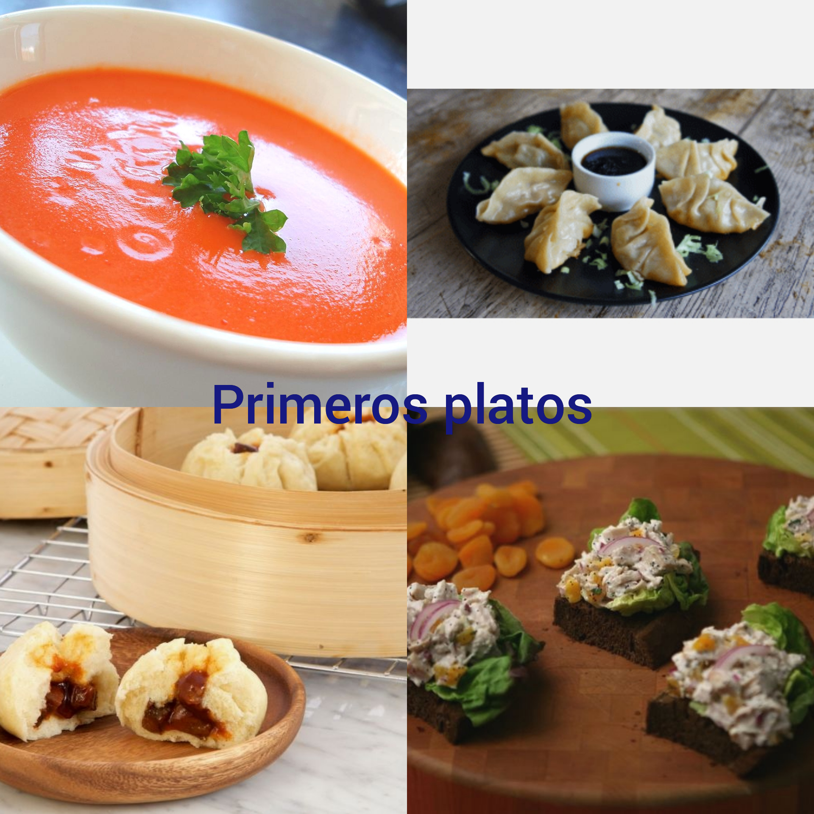
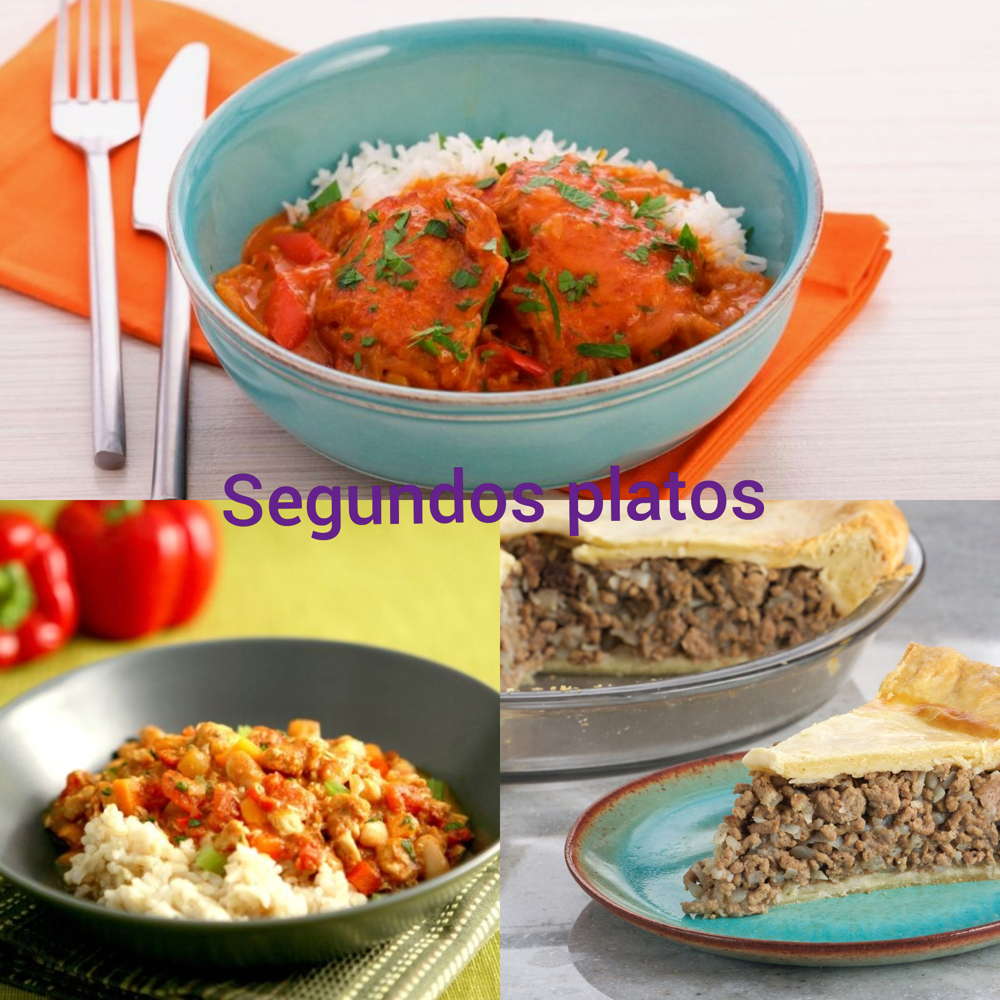
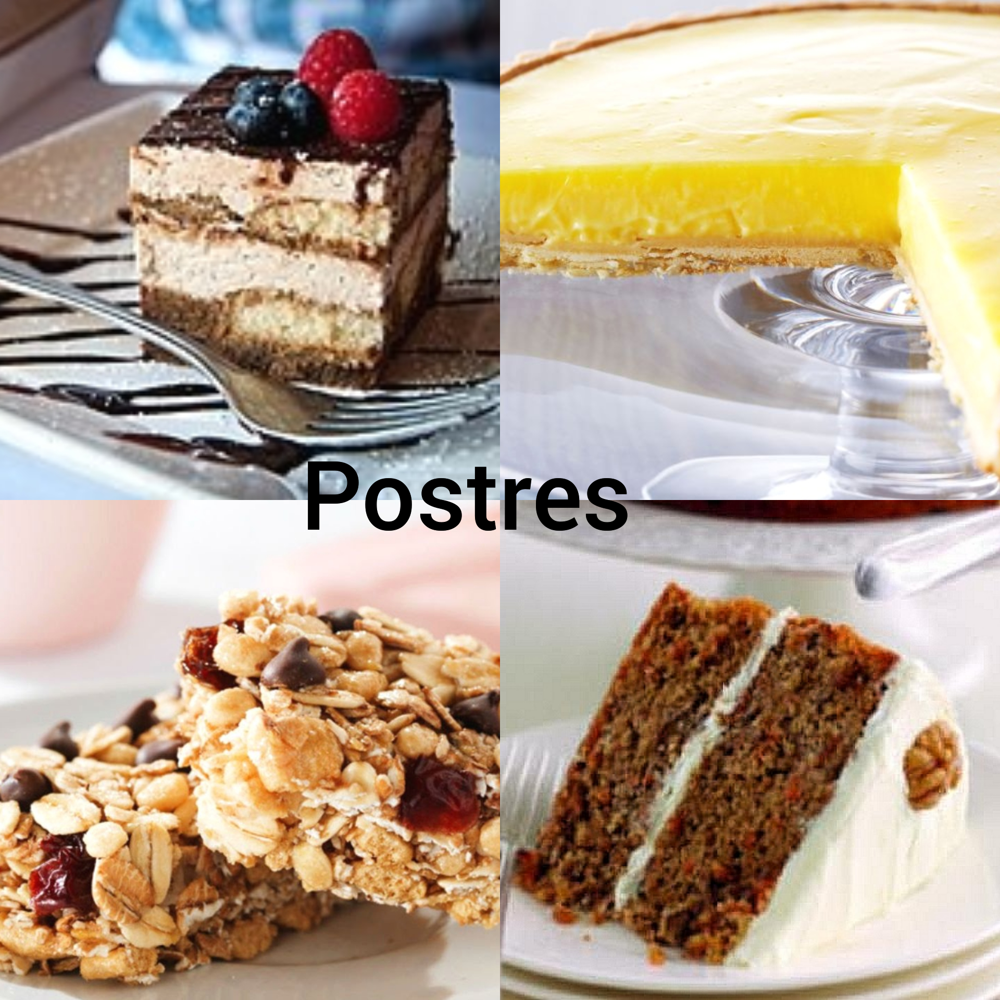

¡Hola y bienvenid@s tod@s!
Me llamo Paula Heimberg González este es mi blog de recetas.
¿Alguna vez te has sentido aburrido sin saber qué hacer?
Has llegado al lugar exacto. En esta página te enseñaré las recetas de mis platos favoritos. Encontrarás desde primeros platos hasta postres de todas las dificultades. Puedes encontrar desde sopas, como una magnífica sopa de tomate hasta el clásico postre italiano, Tiramisú. Personalmente te recomiendo que empieces con las recetas más fáciles ya que es mejor empezar lentamente con pasos seguros que empezar con la receta más difícil y fastidiarla ;).
Al final de cada receta encontrarás la fuente de la que he sacado las recetas en el que, en la mayoría de los casos puedes encontrar un vídeo explicativo.
Además al final de esta página encontrarás un enlace hacia un glosario done te explico algunos ingredientes que no son muy cómunes.
Bueno, te dejo para que disfrutes de las recetas que encontarás más abajo o haciendo clic aquí.
¡Olvídate de los aburridos días y disfruta cocinando!
¡Hasta luego!
|

¡Pulsa en la receta a la que quieras ir! |
|

¡Pulsa en la receta a la que quieras ir! |
|

¡Pulsa en la receta a la que quieras ir! |